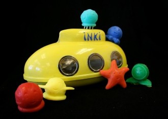

|  | ||

|
raisin engine is a mechanical engineering and industrial design partnership. We architect and build products that sidestep and overstep conventions. They should be elegant in form. Rigorous in detail. Rich in potential.
So why raisin engine? Well, we thought long and hard, and then noticed that raisins are concentrated, distilled, convenient packages of nutrition and energy that effectively don’t have an expiration date. Not a bad example to aspire to. And we like wrinkles. Signs of a life well lived.

dan@raisinengine.com
laura@raisinengine.com
laura@raisinengine.com